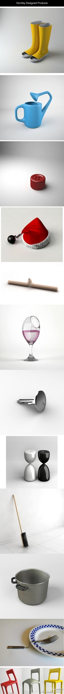

想起宇宙大爆炸这种东西，总有一种宗教感，好像上帝七天创世纪一般；想起粒子物理的什么夸克阿哈格斯阿之类，也有一种宗教感，像佛教一样什么东西都有几类，什么几道几界之类之类。所以对宇宙学结论，我总有一种本能的不接受。

斯图亚特9
2014-03-16

斯图亚特9
2014-03-16
//@cnsimon9: 转发微博
@Bing搜索:
#必应·Night#有一种设计理念叫做，还不如不设计。。。。
- 
斯图亚特9
2014-03-16
昨天偶然看了看2008年底照的照片，竟仔细回想也完全没有一点印象。记忆如果不拿出来复习，看来5年时间足够让其消失了。